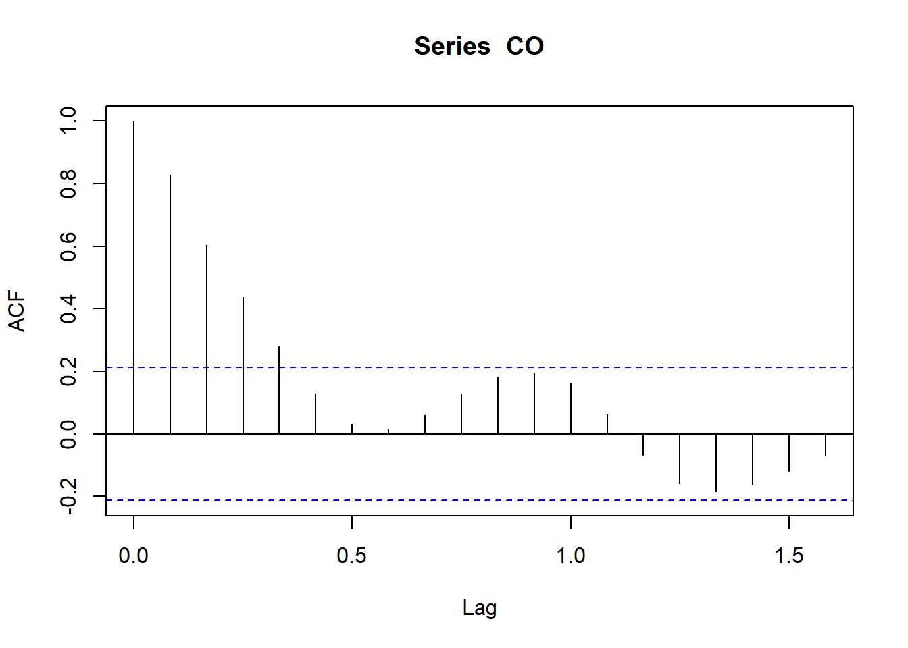
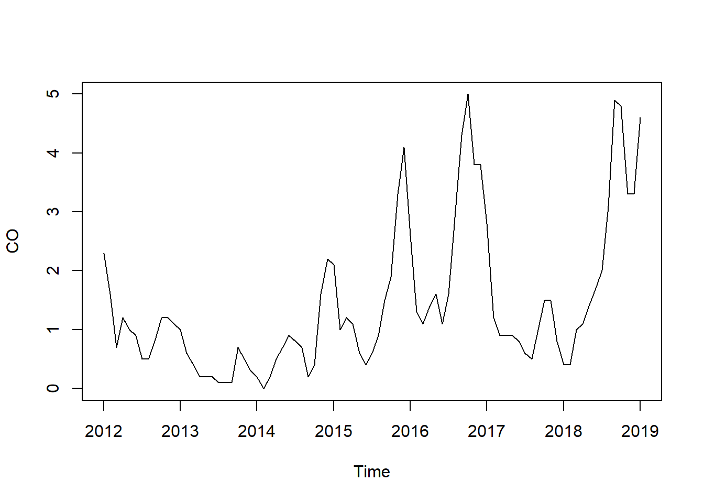
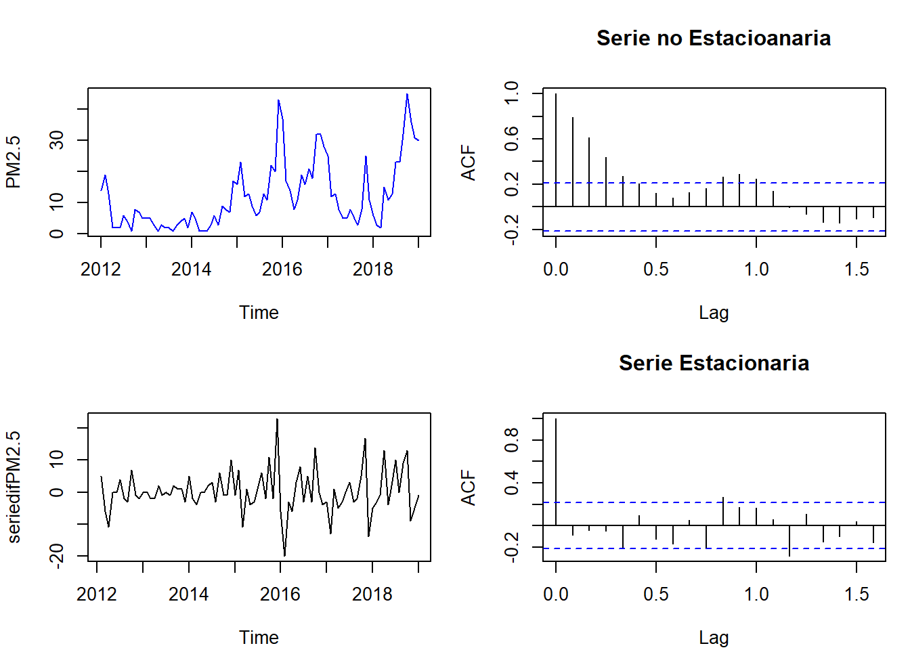
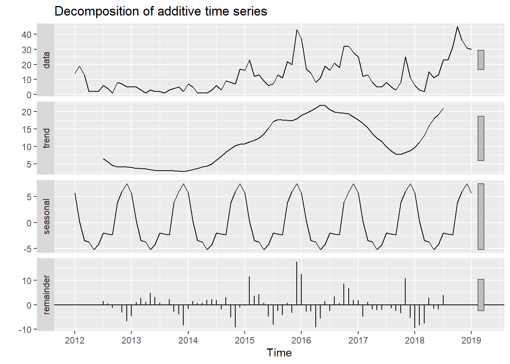

Chapter 4 ACTIVIDAD 4: PROPUESTA AVANCE 4
Aplicar la metodología Holter-Winter y de suavizamiento a la variable tiempo.
4.1 Datos en TSA
- Suavizamiento Exponencial
- Promedio Movil
- Holter-Winter
library(readxl)
datos_CentroAltoRendimiento_RMCAB <- read_excel("C:/Users/ALVARO ARIZA/Desktop/Maestria Javeriana/SERIES DE TIEMPO/ACTIVIDAD 7/datos_CentroAltoRendimiento_RMCAB.xlsx",
col_types = c("date", "numeric", "numeric"))
View(datos_CentroAltoRendimiento_RMCAB)## DateTime CO PM2.5
## [1,] 1325376000 2.3 14
## [2,] 1328054400 1.6 19
## [3,] 1330560000 0.7 13
## [4,] 1333238400 1.2 2
## [5,] 1335830400 1.0 2
## [6,] 1338508800 0.9 2## Registered S3 method overwritten by 'quantmod':
## method from
## as.zoo.data.frame zoo## Cargando paquete requerido: zoo##
## Adjuntando el paquete: 'zoo'## The following objects are masked from 'package:base':
##
## as.Date, as.Date.numeric## Successfully loaded changepoint package version 2.2.4
## See NEWS for details of changes.plot(Datos.ts, main=" ", ylab="Valor", col="deepskyblue", xlab="Date")
title(main = "DATOS CONTAMINANTES")
 ## MODELO SUAVIZADO EXPONENCIAL(ETS)

##
## Ljung-Box test
##
## data: Residuals from ETS(A,N,N)
## Q* = 56.619, df = 17, p-value = 3.755e-06
##
## Model df: 0. Total lags used: 17
##
## Ljung-Box test
##
## data: Residuals from ETS(M,A,N)
## Q* = 25.226, df = 17, p-value = 0.08977
##
## Model df: 0. Total lags used: 17-El algoritmo ETS es especialmente util para conjuntos de datos con estacionalidad y otras suposiciones previas sobre los datos. ETS calcula un promedio ponderado sobre todas las observaciones en el conjunto de datos de las series temporales de entrada como su prediccion. Las ponderaciones disminuyen exponencialmente con el tiempo, en lugar de las ponderaciones constantes en los metodos de promedio movil simple. Las ponderaciones dependen de un parametro constante, conocido como parametro de suavizamiento.
-Ahora vamos a desarrollar con este dataset un modelo de suavizado exponencial usando la funcion ets con los parametros por defecto. Luego vamos a realizar la prediccion de los proximos 8 meses y representaremos graficamente nuestra prediccion, asi mismo visualizaremos los valores estimados y el grado de certeza del 95% en los que se muestra los intervalos inferior y superior de los mismos.
-En primer lugar vamos a aplicar el modelo y ver visualmente la representacion de los residuos del mismo y vemos que se encuentran practicamente todos dentro de los limites de significancia del 2%, a excepcion de uno de los niveles (grafica ACF), y en general tienden a centrarse en 0, y van teniendo una distribucion normal(grafica residuals).
4.2 Forecast de nuestro modelo

 En segundo lugar vamos a calcular el forecast de nuestro modelo en los proximos 8 meses con un nivel de significancia del 95% y vamos a representarlo graficamente.
En segundo lugar vamos a calcular el forecast de nuestro modelo en los proximos 8 meses con un nivel de significancia del 95% y vamos a representarlo graficamente.
4.3 Ajuste entre los datos de la serie y el pronostico del modelo

 Ahora vamos a ver representado el ajuste entre los datos de la serie y el pronostico del modelo en la siguiente representacion grafica, para ello utilizamos la funcion fitted() que obtiene un ajuste con la data historica.
Visualizamos en la grafica que la serie del modelo en negrita se ajusta bastante bien a la prediccion linea roja, y su correspondiente residual que se encuentra entre ambas lineas.
-visualizamos el pronostico, con sus margenes inferior y superior del 95% de valores de grado de certeza (area de color lila)
4.4 resumen completo de los resultados
##
## Forecast method: ETS(A,N,N)
##
## Model Information:
## ETS(A,N,N)
##
## Call:
## ets(y = CO)
##
## Smoothing parameters:
## alpha = 0.9999
##
## Initial states:
## l = 2.3001
##
## sigma: 0.64
##
## AIC AICc BIC
## 305.7216 306.0179 313.0496
##
## Error measures:
## ME RMSE MAE MPE MAPE MASE ACF1
## Training set 0.02705903 0.6323847 0.438845 -Inf Inf 0.3859721 0.3502722
##
## Forecasts:
## Point Forecast Lo 95 Hi 95
## Feb 2019 4.59987 3.345575 5.854165
## Mar 2019 4.59987 2.826117 6.373623
## Apr 2019 4.59987 2.427511 6.772229
## May 2019 4.59987 2.091467 7.108273
## Jun 2019 4.59987 1.795404 7.404335
## Jul 2019 4.59987 1.527742 7.671998
## Aug 2019 4.59987 1.281601 7.918139
## Sep 2019 4.59987 1.052497 8.147243##
## Forecast method: ETS(M,A,N)
##
## Model Information:
## ETS(M,A,N)
##
## Call:
## ets(y = PM2.5)
##
## Smoothing parameters:
## alpha = 0.5023
## beta = 1e-04
##
## Initial states:
## l = 14.1924
## b = 0.617
##
## sigma: 0.6102
##
## AIC AICc BIC
## 695.4499 696.2093 707.6631
##
## Error measures:
## ME RMSE MAE MPE MAPE MASE
## Training set -0.7934962 7.007187 5.191754 -66.64956 88.92684 0.5665143
## ACF1
## Training set 0.3689771
##
## Forecasts:
## Point Forecast Lo 95 Hi 95
## Feb 2019 32.90278 -6.449053 72.25462
## Mar 2019 33.51307 -12.779740 79.80588
## Apr 2019 34.12336 -18.879234 87.12596
## May 2019 34.73365 -24.884843 94.35214
## Jun 2019 35.34394 -30.882973 101.57085
## Jul 2019 35.95423 -36.933569 108.84202
## Aug 2019 36.56451 -43.081456 116.21048
## Sep 2019 37.17480 -49.362243 123.71185podemos representar solo los resultados a traves de un dataframe, asignando la ejecucion del mismo a la variable pronostico.
## Point Forecast Lo 95 Hi 95
## Feb 2019 4.59987 3.345575 5.854165
## Mar 2019 4.59987 2.826117 6.373623
## Apr 2019 4.59987 2.427511 6.772229
## May 2019 4.59987 2.091467 7.108273
## Jun 2019 4.59987 1.795404 7.404335
## Jul 2019 4.59987 1.527742 7.671998
## Aug 2019 4.59987 1.281601 7.918139
## Sep 2019 4.59987 1.052497 8.147243## Point Forecast Lo 95 Hi 95
## Feb 2019 32.90278 -6.449053 72.25462
## Mar 2019 33.51307 -12.779740 79.80588
## Apr 2019 34.12336 -18.879234 87.12596
## May 2019 34.73365 -24.884843 94.35214
## Jun 2019 35.34394 -30.882973 101.57085
## Jul 2019 35.95423 -36.933569 108.84202
## Aug 2019 36.56451 -43.081456 116.21048
## Sep 2019 37.17480 -49.362243 123.711854.5 SUAVIZADO EXPONENCIAL(HOLT-WINTERS)

 El metodo se basa en un algoritmo iterativo que a cada tiempo realiza un pronostico sobre el comportamiento de la serie en base a promedios debidamente ponderados de los datos obtenidos anteriormente.
El metodo se basa en un algoritmo iterativo que a cada tiempo realiza un pronostico sobre el comportamiento de la serie en base a promedios debidamente ponderados de los datos obtenidos anteriormente.
-A este particular hay que reseñar los 2 diferentes tipos de estacionalidad que se pueden dar en las graficas, que son estacionalidad aditiva o estacionalidad multiplicativa.
-Elijiremos el modelo multiplicativo cuando la magnitud del patron estacional en los datos depende de la magnitud de los datos. En otras palabras, la magnitud del patron estacional aumenta a medida que los valores de los datos se incrementan y disminuye a medida que los valores de los datos decrecen.
-Elijiremos el modelo aditivo cuando la magnitud del patron estacional en los datos no dependa de la magnitud de los datos. En otras palabras, la magnitud del patron estacional no cambia cuando la serie sube o baja.
CO contiene ceros, por esto se uza additive:


4.6 Predicciones a 8 meses
## fit upr lwr
## Feb 2019 4.233802 5.454178 3.0134264
## Mar 2019 4.080104 5.814157 2.3460510
## Apr 2019 3.930573 6.064381 1.7967647
## May 2019 3.981042 6.456557 1.5055266
## Jun 2019 4.044010 6.824715 1.2633057
## Jul 2019 3.715312 6.775678 0.6549472
## Aug 2019 3.811614 7.132607 0.4906220
## Sep 2019 4.166250 7.733049 0.5994512## fit upr lwr
## Feb 2019 24.65181 30.35460 18.949024
## Mar 2019 15.82478 21.81548 9.834074
## Apr 2019 15.45779 22.06076 8.854819
## May 2019 15.52247 22.74553 8.299411
## Jun 2019 16.77499 24.86911 8.680869
## Jul 2019 22.86161 33.36516 12.358066
## Aug 2019 19.29676 29.04362 9.549902
## Sep 2019 16.11862 25.21781 7.019432Asi mismo parece que la curva se ajusta bastante bien al modelo.